With the bar code extension to JpGraph you can now easily create bar codes using all the commonly accepted symbologies. You can choose to have the resulting bar code being created as an image (in either PNG or JPEG format) or as a Postscript file ready for printing on high resolution printers. The bar code extension provides extensive data verification which makes sure you can't create an invalid bar codes.
All generated bar codes (except CODE 11 which have little support in Europe) have been extensively verified using Metrologic CCD-47 handheld scanner.
This is a summary of the features available in the JpGraph bar code extension.
Even though primarily the JpGraph bar code extension is meant, and designed, to be used as a library within a larger system there is a small demo bar code creation application included in the distribution. This application can be used to easily create bar code through it's WEB interface.
This application is primarily included as a demo on the features available and not as a finalized product.
You can find the application in the "barcode/" subdirectory in the distribution.
The image below shows a screen shot of this demo application
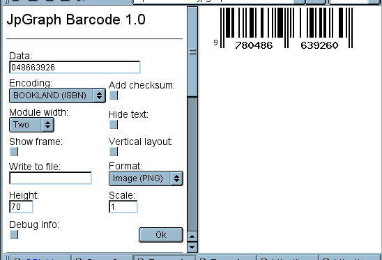
Figure 1. Screenshot of the barcode creation demo
application included in the distribution. The application can be run by
pointing your browser to the "barapp/" directory. Depending on you
installation you might have to change the include path in
"barcode_image.php" so that the standard JpGraph files may be found.
All barcode creation follows the following simple steps :
So for example to create an image bar code representing the data string
"ABC123" using symbology "CODE 39" you would have to write
<?php $symbology = BarcodeFactory::Create
(ENCODING_CODE39
);
$barcode
= BackendFactory
::Create('IMAGE',
$symbology);
$barcode
->Stroke('ABC123');
which would then produce the following image
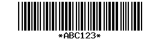
Figure 1. Encoding "ABC123" with CODE 39.
As you can see from the code above the basic interface to the library makes use of two abstract factories which creates the appropriate encoder and output backend. This design makes the addition of new output formats and new symbologies transparent for the end user of the library.
If you instead wanted to encode the data string using symbology
"CODE 128" instead, you would only have to modify the first line in the
above code snippet to
<?php $symbology = BarcodeFactory::Create
(ENCODING_CODE128
);
// ... same as above ...
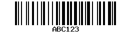
Figure 2. Encoding "ABC123" with CODE 39.
As you have seen in the examples above you specify what encoding to use by means of a symbolic constant. The following list shows the symbolic constants available to specify encoding. The symbology the constant is referring to is obvious from the name.
As mentioned in the introduction you have some flexibility in how the generated bar codes is formatted and encoded.
For example, two common modifications is to either change the module width used (=the width of a unit line in the bar) or suppress the printing of the human readable version of the data string.
To adjust the module width you make use of the "SetModuleWidth()"
method of the backend. So for example to augment the previous example
and change the module width to 2 and hide the human readable text we
would change the code to
<?php $symbology = BarcodeFactory::Create
(ENCODING_CODE39
);
$barcode
= BackendFactory
::Create('IMAGE',
$symbology);
$barcode
->SetModuleWidth
(2);
$barcode
->HideText();
$barcode
->Stroke('ABC123');
Which would give the result
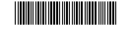
Figure 3. Encoding "ABC123" with CODE 39, hiding
the text.
A note on the module width might be in order here. For image type backends this specifies the number of pixels used for a module and for Postscript (and Encapsulated PS) this specifies the width in points (i.e. 1/72 inch). This also means that for image type backends only integer values makes sense.
You should keep in mind that depending on the quality of the printer (and paper) very small module width might not be readable with all bar code readers. For images it is therefore recommended to use "2" pixels as the minimum module width and for postscript output the minimum recommended width is "0.8" pt.
In the following two section we will describe the options available to you.
For the encoding there is basically only one modification you can do. For those symbologies that include an optional checksum you may choose to enable this calculation. By default checksum calculation is off since they make the code longer.
The following symbologies may have optional checksum character(s)
Turning on/off checksum calculation for other symbologies will have no
affect. You enable the checksum calculation with a call to
"AddChecksum()" on the chosen backend. For example to augment the
previous "CODE 39" example to include the checksum we would change the
code to
<?php $symbology = BarcodeFactory::Create
(ENCODING_CODE39
);
$barcode
= BackendFactory
::Create('IMAGE',
$symbology);
$barcode
->AddChecksum
();
$barcode
->Stroke('ABC123');
Which would give the result
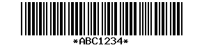
Figure 4. Encoding "ABC123" with CODE 39 adding
checksum (checksum=4).
You can adjust the output format by specifying/creating the appropriate backend. As of version 1.0 an image and postscript (and encapsulated postscript) backends are provided as standard.
You create the backend of your choice by calling the backend factory
method "BackendFactory::Create()" as in
<?php $barcode = BackendFactory::Create
(BACKEND_IMAGE
,$symbology);Where "$symbology" is the chosen symbology as created by the "BarcodeFactory::Create()" . Please note that both factory functions are called as static methods.
As of version 1.0 the following output formats are available:
<?php $barcode = BackendFactory::Create
(BACKEND_PS,$symbology);
$barcode
->SetEPS()Plase note that for the postscript backend the postscript code is returned as a string from the "Stroke()" method. You can also have the Stroke() method write the postscript file directly to a file. See more about writing to a file below.
To send the created stream (either image or postscript) back to the browser or to a file you use the "Stroke()" method. An example will make this clear.
Continuing the previous code and assuming we want to create an image
that is send back to the browser. We could then write something like:
<?php $symbology = BarcodeFactory::Create
(ENCODING_CODE128
);
$barcode
= BackendFactory
::Create(BACKEND_IMAGE,
$symbology);
$barcode
->Stroke('ABC123');
If the code above was stored in a file "barcode123.php" we could
then call that script from within another HTML file as
<?php
<img src="barcode123.php">To see the image.
You can also stream the image directly to a file by specifying a
second argument to the "Stroke()" method above. So if we instead wanted
the barcode to be stores in the file "/tmp/barcode.png" we could write
<?php $symbology = BarcodeFactory::Create
($code);
$barcode
= BackendFactory
::Create(BACKEND_IMAGE,
$symbology);
$barcode
->Stroke('ABC123',
'/tmp/barcode.png');
For the image backend the "Stroke()" method returns "true" if the
image was created and sent back to the browser and "false" if there
were any problem. So a client program should include error checking
code similar to:
<?php $symbology = BarcodeFactory::Create
(ENCODING_CODE39
);
$barcode
= BackendFactory
::Create(BACKEND_IMAGE,
$symbology);
if( $barcode
->Stroke('ABC123',
'/tmp/barcode.png')===
false ) {
// Suitable error handling
}
Again, please note that for the Postscript background the Stroke() method normally returns the postscript file as a string if everything went well.
You can do this easily by adding a second argument, the file name, to the "Stroke()" method. This works for all backends. The file name should be an absolute path name. Since it is the PHP process that writes the file you need to make sure that it has the necessary privileges to write to the chosen directory.
The following code shows a complete example of writing a generated
image to a file:
<?php $file='/tmp/barcode.png';
$data='ABC123';
$symbology
= BarcodeFactory
::Create(ENCODING_CODE128);
$barcode
= BackendFactory
::Create(BACKEND_IMAGE,
$symbology);
if( $barcode
->Stroke($data,
$file)===false ) {
// Suitable error handling
}
else {
echo "Wrote file: '$file'.<p>";
}
You adjust the module width by calling the "SetModuleWIdth()" method as
in
<?php $symbology = BarcodeFactory::Create
(ENCODING_CODE128
);
$barcode
= BackendFactory
::Create(BACKEND_IMAGE,
$symbology);
$barcode
->SetModuleWidth
()For an image the module width given is interpretated as number of pixels. Hence for image backend it only makes sense to specify width in integers. Any width given as fractions will be rounded to the nearest integer.
For the postscript backer the width given is interpretated as number of points (pt), i.e. 1 pt = 1/72 inch. For postscript backend it is therefore perfectly legal to specify width as fractions of a point.
A modern high quality inkjet or laser printer should be able to generate acceptable images for both 1 pixel wide images and down to 0.7 pt postscript files.
But, to be on the safe side as a rule of thumb you shouldn't use a module width less or equal "2" for images and 0.9 for postscript unless you know what kind of printer will be used to make the hardcopy of the bar codes.
You can rotate the bar code 90 degrees providing a vertical view of the bar code with a call to "SetVertical()"
The height of the bar codes is specified with the "SetHeight()" method. For images the height is interpretated as pixels and for postscript files it is interpretated as points.
You can hide the text under the bar code with a call to the "HideText()" method.
You can specify a scaling for the bar codes using the "SetScale()" method .
For images you can add a frame around the bar code with a call to "ShowFrame()"
The following example outputs a postscript file representing the bar
code with a module width of 1.2 pt, using a vertical layout and scaling
the image 2 times. For this example we are using CODE 39 with a
checksum (which is automatically generated)
<?php $symbology = BarcodeFactory::Create
(ENCODING_CODE128
);
$barcode
= BackendFactory
::Create(BACKEND_IMAGE,
$symbology);
$barcode
->SetVertical(true);
$barcode
->Scale(2);
$barcode
->SetModuleWidth
(1.2);
if( $barcode
->Stroke('ABC123') ) {
// Suitable error handling
};
In the following section we will describe the requirements to encode in each of the supported symbologies. Some symbologies have strict standard for the data to be encoded and hence you might get a "Data validation" error if the data you are trying to encode doesn't follow the requirements.
UPC A = Universal Product Code Version A.
Used for consumer goods. Is being slowly replaced by EAN13. UPCA is a special case of of EAN13 where the first digit is always 0.
Eleven digit. First digit is always 0.
Automatic, mandatory.
"03456781233"
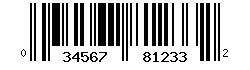
Figure 5.UPC A encoding of "03456781233"
UPC E = Universal Product Code Version E.
Same general use as UPC A. Can be considered a subset and a more compact version of UPC A. Used where UPC A bar codes are to wide.
The 6 resulting digits is take from the UPC A according to the following 4 rules:
Eleven digits. First digit is always 0. Data input must follow UPC rule for construction of UPC E data.
Automatic, mandatory
"05510000120"
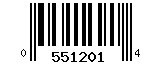
Figure 6.UPC E Encoding of "05510000120"
As comparison the UPC-A version of the same data is shown below
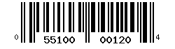
Figure 7.UPC A Encoding of "05510000120"
A shorter version of EAN13 using only 7 digits + checksum digit.
Seven digits.
Automatic, mandatory
"3776221"
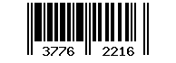
Figure 8.EAN8 Encoding of "3776221"
Generic code for consumer goods. Is replacing UPC-A as worldwide standard.
Twelve digits.
Automatic, mandatory
"377622153812"
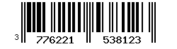
Figure 9.EAN13 Encoding of "377622153812"
EAN 128 is basically a CODE 128 where the data structure is strictly regulated. Please refer to the official EAN-128 specifications for details.
An alphanumeric data string following EAN 128 rules. This means for one thing that the string must start with a FUNC1 character which is encoded using ASCII 128 in JpGraph Barcode available as constant EA_FUNC1. The validation routines checks these rules and will fail any data string not following the EAN 128 rules.
Automatic, mandatory.
"3125134772"
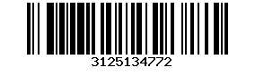
Figure 10.EAN128 Encoding of "3125134772"
Old low density standard. For newer applications it should not be used. Use interleaved 2 of 5 instead since this is a higher density code.
Digits.
Optional.
| "13729", No checksum
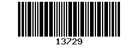 Figure 11. Industrial 2 of 5 Encoding of "13729" | "13729", With checksum
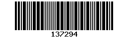 Figure 12. Industrial 2 of 5 Encoding of "13729" with checksum |
Various. Relative hight density numeric code. Used for example on some driving licenses.
Even length numeric string when not using checksum. Odd length string when using checksum.
Optional.
Note. Since using a checksum requires an odd number of digits you can easily do this by adding a '0' to an even numbered data string.
| "137291", No checksum
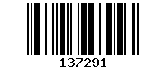 Figure 13. Interleaved 2 of 5 Encoding of "137291" | "0137291", With checksum
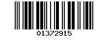 Figure 14. Interleaved 2 of 5 Encoding of "0137291" with checksum |
THIS IS AN EXPERIMENTAL ENCODER
Due to the lack of CCD scanners supporting this code in Europe we
have not been able to verify this Code against any scanning equipment.
Numeric only code. Used primarily on telecommunication equipment. Not recommended for general usage. Note: This code is not widely supported by handheld CCD scanners.
Numeric including the dash "-" character.
Optional.
| "0137291", No checksum
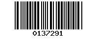 Figure 15. Code 11, "0137291" | "0137291", With checksum
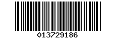 Figure 16. Code 11, "0137291" with checksum |
( a.k.a Code 3 of 9 )
General alphanumeric data (Capitals only)
Alphanumeric (CAPITALS only) including the special characters "$", "/", "+", "%" and "*"
Optional.
| "0137291", No checksum
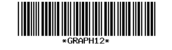 Figure 17. Code 39, "GRAPH12" | "0137291", With checksum
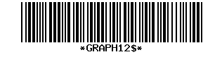 Figure 18. Code 39, "GRAPH12" with checksum |
Same as Code 39 with the change that it support small letters "a,b,c,d,..." but do not support the special characters "+/%$+*".
Alphanumeric data.
Optional.
| "Code39", No checksum
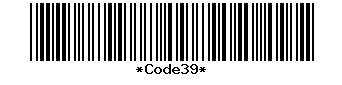 Figure 17. Code 39, "Code39" |
"Code39", With checksum
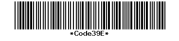 Figure 18. Code 39, "Code39" with checksum |
Generic high density code which supports the full ASCII set.
Alphanumeric characters.
Automatic, mandatory.
"Code128"
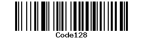
Figure 19. Code 128, "Code128"
Old, numeric + some alpha capability, code. Primarily used in the USA.
Numbers 0-9, Special characters "-$:/.+"
None.
"12354"
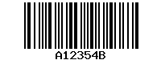
Figure 20. Codabar, "12354"
This is a specially formatted EAN13 Code.
Encodes ISBN codes in books and magazines.
A valid ISBN number without last digit (check digit) and "-" signs.
Automatic, mandatory.
ISBN Code: 0-486-63926-6 (Complex variables and the Laplace
Transforms for Engineers)
Input data: "048663926"
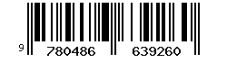
Figure 21. Bookland, "048663926"